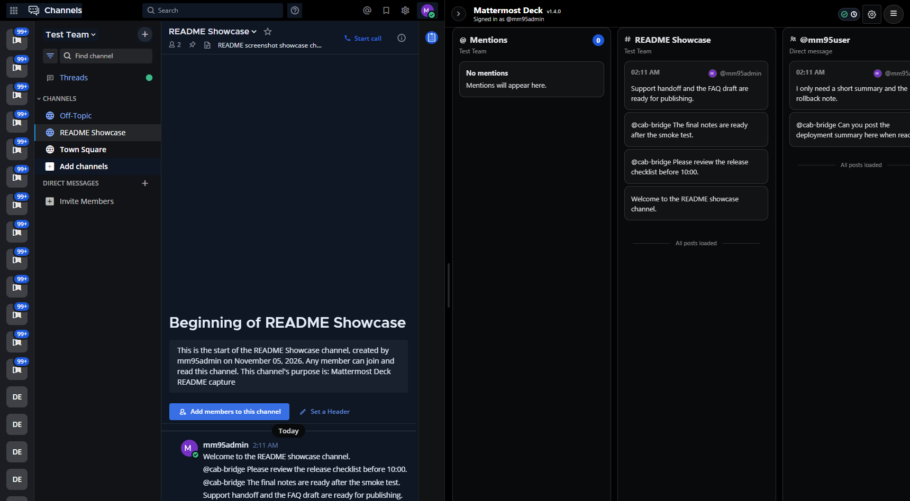
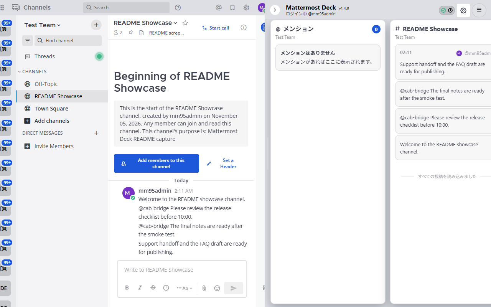

Mattermost Web の右側に、メンション・チャンネル・DM・検索結果を並べるペインを追加します。
ログイン、投稿、編集、スレッド操作は Mattermost 本体のままです。Deck が足すのは読むための一覧だけで、Mattermost の設定やチーム構成は変更しません。
| Version | 1.4.1 |
|---|---|
| Browser | Google Chrome 120 以降 |
| Mattermost | 9.5.4 で E2E 全テスト／9.5.11・10.11.22・11.8.2 で主要テスト |
| UI 言語 | 9 言語 |
| ライセンス | MIT |
| 保存先 | このブラウザー内のみ |
全体の画面
左が Mattermost 本体、右が Deck。画像はクリックで拡大します。

画面の占め方
Mattermost の右ペインを開くと、メイン表示の幅を変えずに Deck 側が縮みます。

| 配置 | 横一列／上下 2 段（ビューから切り替え） |
|---|---|
| 段のスクロール | 上段と下段で独立 |
| 高さ配分 | 境界のドラッグで 20〜80% |
| ペイン幅 | 260–480px |
| 並び替え | タイトルのドラッグ（段をまたげる） |
| 別名 | ダブルクリック／右クリック／F2 Double-click, right-click, or F2 |
| 保存 | Views に保存、JSON で書き出し・読み込み |
ペインの一覧
＋ から追加します。同じ種類をいくつ並べても構いません。
| 種類 | 識別子 | 内容 |
|---|---|---|
| メンション | mentions |
参加している全チーム・全チャンネルのメンションを 1 つの一覧に。カスタムメンションキー、@all @channel @here、グループメンション、DM と GM、CRT 有効時のスレッド返信を Mattermost の設定どおりに判定します。
Mentions from every team and channel you have joined, in one list. Custom mention keys, @all @channel @here, group mentions, DMs and GMs, and thread replies under CRT are all resolved the way your Mattermost settings define them.
|
| 要確認メンション | mentions / review | 「確認済みにする」を押すまで消えない一覧。Mattermost 側で既読にしても、投稿を開いても消えません。直後 5 秒は取り消せ、確認済み履歴からも戻せます。 |
| チャンネル監視 | channelWatch | 特定のチャンネルを開いたままにします。 |
| DM 監視 | dmWatch | DM とグループメッセージを個別のペインとして常時表示します。 |
| 検索 | search | 検索結果をペインとして固定します。ハイライトキーワード設定と組み合わせて使います。 |
| お気に入り | favorites | 投稿の ☆ で登録する個人用のリスト。Mattermost の保存済み投稿や共有ピン留めとは別枠で、サーバーとアカウントごとに最大 100 件をこのブラウザーに保存します。 |
| 保存済み投稿 | saved | Mattermost の保存済み投稿を一覧にします。 |
| Diagnostics | diagnostics | 接続状態と同期の様子。Performance タブに API の件数・平均遅延・P95・エラー率、直近のトレース、JSONL 書き出し。 |
表示
Mattermost のテーマに追従します。画像はクリックで拡大します。




通信と保存
| REST | いまブラウザーで開いている Mattermost のセッションをそのまま使います。Deck のための追加ログインはありません。 |
| WebSocket | Personal Access Token を設定したときだけ有効です。未設定の場合は定期取得で更新します。 |
| PAT の保存 |
既定は chrome.storage.session。永続保存は明示的に選んだときだけで、クライアント側で暗号化します。
Defaults to chrome.storage.session. Persistent storage happens only when you choose it, and is encrypted client-side.
|
| 有効化の条件 | 設定した origin と一致、許可した route kind に合致、任意のチーム slug 制限を満たす、health-check API が成功する。すべて満たしたときだけ描画します。 |
| 保存されるもの | 設定、レイアウト、お気に入り、要確認の状態、除外設定。すべてこのブラウザー内に、サーバーとアカウントごとに保存します。 |
| 送信先 | 設定した Mattermost サーバー以外へは送りません。第三者の analytics も広告もありません。 |
導入手順
インストールすると Options 画面が開きます。
その origin への Chrome 権限が要求されます。リモートは HTTPS が必要です。
右側に Deck が出たら ＋ から追加します。
操作のヒント
- 01 ペインのタイトルをダブルクリック、右クリック、または F2 で別名を付けられます。空欄のまま保存すると元の名前に戻ります。 Rename a pane by double-clicking its title, right-clicking it, or pressing F2. Save it blank to restore the original name.
- 02 タイトルのドラッグ中に Esc で並び替えを取り消します。投稿も検索条件もスクロール位置もそのままです。 Press Esc while dragging a title to cancel the move. Posts, filters, and scroll positions all stay as they were.
- 03 上下の境界をダブルクリック、または Home で高さを均等に戻します。↑ ↓ でも調整できます。 Double-click the divider between rows, or press Home, to even out their heights. ↑ and ↓ adjust it too.
- 04 ペイン右端の境界をダブルクリック、または Home で既定幅に戻します。← → でも調整できます。 Double-click a pane's right edge, or press Home, to return it to the default width. ← and → adjust it too.
- 05 ペインの虫眼鏡で、読み込み済みの本文と投稿者を絞り込めます。追加の通信はなく、日本語入力の変換中も一覧が消えません。 The magnifier in each pane filters the posts and authors already loaded. It sends no extra requests, and the list stays put while an IME conversion is in progress.
- 06 使い分けが複数あるときは Views に保存します。端末を移すときは JSON で書き出します。 Save each way you work as a View. Export to JSON when you move to another machine.
- 07
Appearance のコンパクト表示で
時刻 投稿者: 本文の 1 行表示になります。 Compact mode under Appearance switches rows to a single line:time author: message. - 08 投稿の「…」から、そのユーザーの投稿やその会話を表示しないよう設定できます。取得や既読には影響しません。 The “…” menu on a post hides that author or that conversation. It changes nothing about fetching or read state.
よくある質問
Mattermost の代わりに使うものですか
いいえ。ログイン、投稿、編集、スレッド操作は Mattermost 本体のままです。
Personal Access Token は必要ですか
必要ありません。未設定でも定期取得で更新します。設定すると WebSocket によるリアルタイム更新になります。
どのサーバーでも自動的に動きますか
いいえ。Options に保存して Chrome の origin 権限を許可したサーバーだけです。リモートには HTTPS が必要です。
データは開発者のサーバーへ送られますか
送られません。通信するのは設定済みの Mattermost サーバーだけです。
Deck で読むと Mattermost 側も既読になりますか
なりません。「確認済みにする」も Mattermost の既読とは別の状態です。
Mattermost Free Edition でも使えますか
ブラウザーから Mattermost Web と必要な API にアクセスできれば使えます。グループメンションなど一部はサーバーのライセンスと設定次第です。
拡張機能を削除するとどうなりますか
このブラウザーに保存していた設定、レイアウト、お気に入り、要確認の状態、除外設定も一緒に消えます。
不具合の報告はどこへ
GitHub Issues で受け付けています。